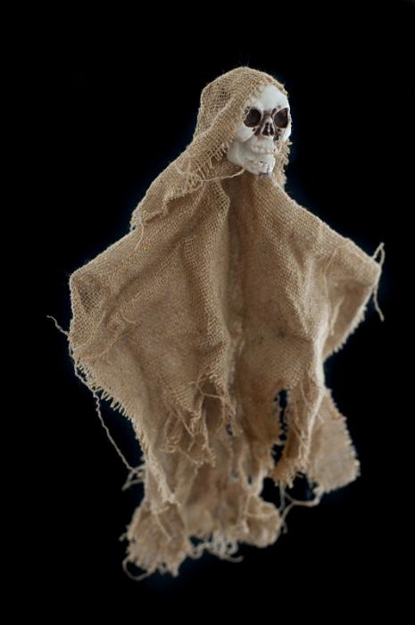
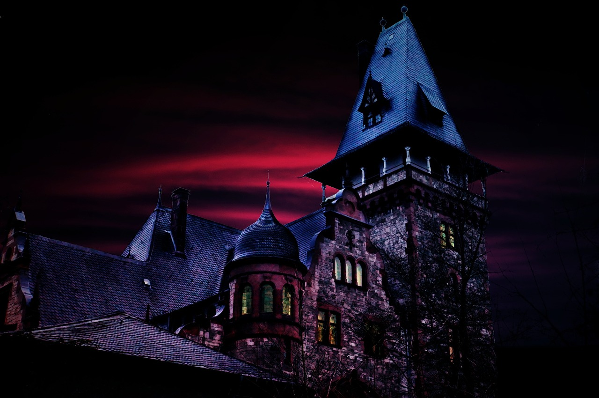
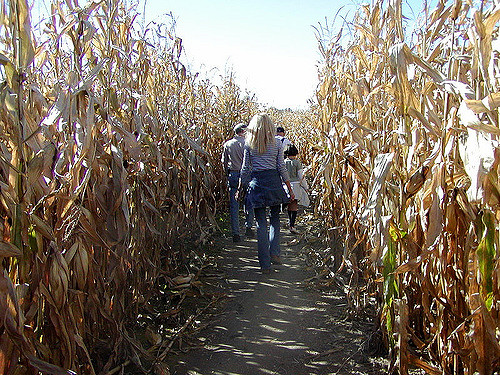

Trick Or Treating

Trick Or Treating is a tradition in which young children terrorize neighborhoods. They saunter around, dressed as all manner of witches, zombies, and ghouls, banging on doors exclaiming, "Trick Or Treat!" The hapless adult who opens the door is beholden to the child for a small gift of candy deposited into a bottomless pillow case carried for trick or treating.
What to do if trick-or-treating is happening in your neighborhood:
First, make sure you have candy. If you think you have enough, get some more. Full size candy bars are the best thing to stock as a homeowner. Think of it as paying the child mafia off to avoid pranks in the year to come. It's a social contract. Sit on your front porch and make sure each child only takes one piece. If you leave your stache unattended some quick looking hoodlum will likely fill his pillow case.
On the first slider page you will find info on haunted houses. On the second, for corn mazes!
Haunted Houses
Once it is dark outside, it is time for the ghosts, goblins and ghouls to have some fun. Haunted Houses are a great source of fun and terror. There are haunted houses of all magnitudes. Communities may come together to create a haunted trail through a park, or there are companies who specialize in scaring their visitors. One of our personal favorites is Burial Chamber in Appleton, Wisconsin. They have 3 haunted houses and 4 burial chambers on site, meaning if you make the trip you are in for quite the scare! If you are looking for more than a person dressed up as a zombie to scare you, there are plenty of haunted residences that you can check out for yourself and see if ghosts are real.

Corn Maze
Corn mazes are very popular in Fall, especially around Halloween. Typically farmers will go through their corn field and cut out paths. The bigger the field, the better!! Corn mazes are a great family activity, as you can try as a team to get through, or split into groups and race to see who can get through first. Some corn mazes become haunted at night, where people dress up in scary costumes to add a spooky element. You never know what will go bump in the dark!!
